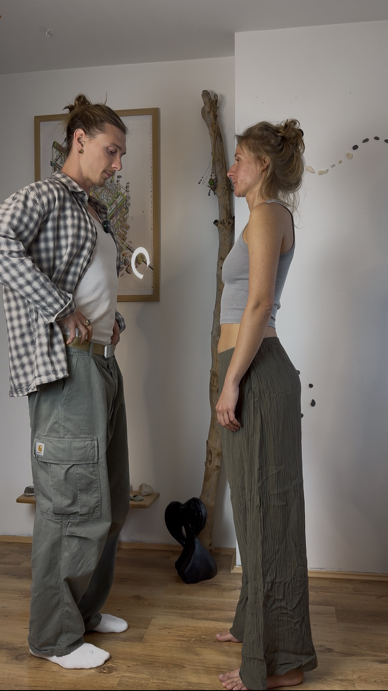
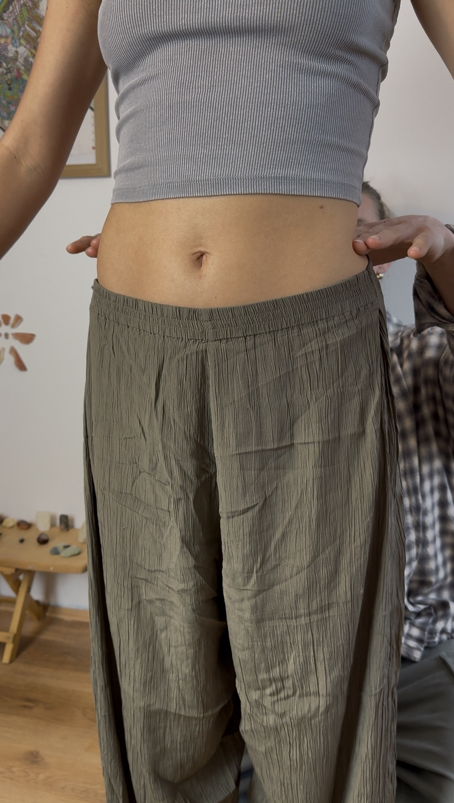
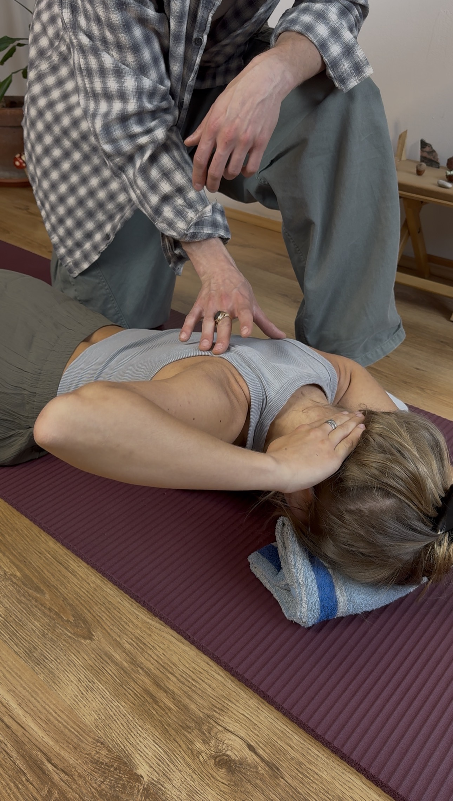
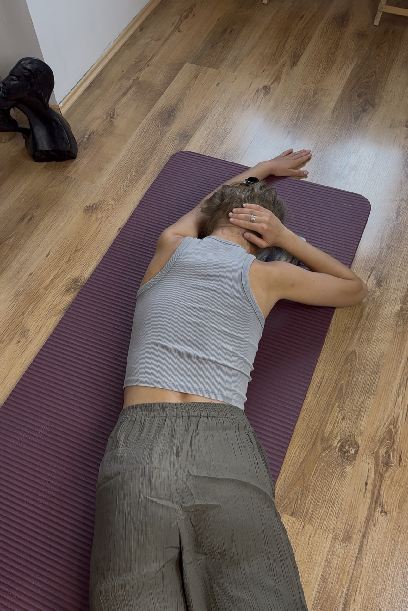
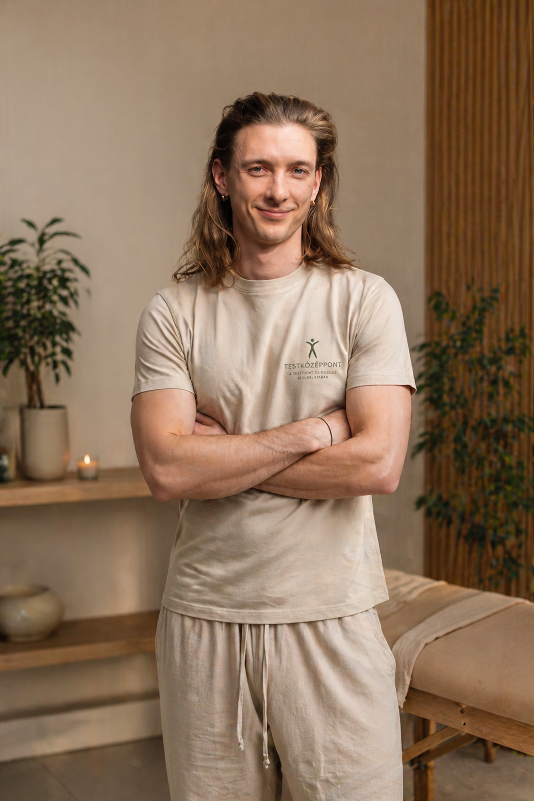

Ezzel nem vagy egyedül.
Voltál már gyógytornásznál. Masszőrnél.
Talán csontkovácsnál is.
Mindenki segített egy kicsit — aztán visszajött a fájdalom.
Mindig visszajön.
Nem azért, mert rossz kezelést kaptál.
Hanem mert mindenki azt kezelte, ami fájt — nem azt, ami miatt fájt.
Nem az a kérdés, hol fáj — hanem hogy honnan ered.
Hat különböző tünet — egy forrás.
Az a tompa, állandó fájdalom, ami sosem múlik el teljesen. Hosszú meetingek után fellángol, éjszaka felébreszt, hosszabb sétán kínoz.
Tenziós fejfájás, előrenyúló fejtartás, zsibbadás-érzet a karban — és nulla vállmobilitás. Egy rossz mozdulat, és napokra kiesel.
Az elmozdult medence nemcsak a derekadban hagy nyomot. A csípő merevsége, a térdfájás, a lábban fellépő zsibbadás — mind ugyanannak a rendszerproblémának a tünetei.
Ibuprofen reggel, gyulladáscsökkentő este — csak hogy kibírd a napot. Működik, amíg tart. De ez nem megoldás: eltakarja a problémát, miközben az ok tovább rombol.
Gyógytorna, masszázs, csontkovács, YouTube nyújtások. Mindegyik segít egy kicsit — aztán visszajön. Mert mindegyik a tünetet kezeli.
Tudod, hogy az ignorálás nem megoldás. Minden évben egy kicsit nehezebb visszarázódni — és egyre jobban félsz attól, mi lesz 10 év múlva.
A fájdalom szinte soha nem ott van,
ahol a probléma forrása.
A test mindig a legkisebb ellenállás felé törekszik.
Alkalmazkodik, kompenzál, megkerüli a hibát — és elvégzi a mindennapi feladatokat.
Egy bizonyos pont után azonban ezek az alkalmazkodások elváltozásokhoz vezetnek.
A fájdalom ezeknek a jele.
Nem elnyomni kell.
Helyreállítani a rendszer optimális működését.
A TestKözéppont Módszer pontosan ezt végzi el — rendszerszintű újrakalibrálással,
a problémák forrásának megszüntetésével.
A test statikai rendszer. Ha az alap — a medence — elmozdul, az egész szerkezet kompenzál. A módszer nem a tünetet kezeli, hanem rendszerszintű megoldást ad.

Részletes biomechanikai felmérés:

A medence, mint testközéppont — ha nem optimális helyzetben áll, felborul az egész izomlánc.
Ebből logikusan következik, hogy miért ott fáj, ahol fáj, és mi áll a jelenlegi problémák mögött.


Minden fázishoz videós anyag készül rólad — otthon, önállóan, bármikor elvégezhető.
Ahogy ismétled a mozdulatokat, újraírod a régi mozgásmintákat.
Ezáltal sokkal tudatosabban fogsz kivitelezni minden mozdulatot.

Mozgásterapeuta, Budapest
TestKözéppont Módszer
Egész életemben a testemnek éltem.
Mozgás volt az identitásom. Ez adott energiát, tiszta fejet, egyensúlyt. Ehhez nem volt szükségem senki jóváhagyására.
Mégis ott volt mindig a fájdalom. 2-3 hetente becsípődött a nyakam — olyan erősen, hogy napokra kiestem. Szakembertől szakemberig jártam. Csináltam mindent, amit mondtak. Hittem nekik.
Évekkel később jöttem rá, hogy amit csináltam, az súlyosbította a problémát.
"Hiába voltam szálkás, hiába tudtam bármit megcsinálni a testemmel — ami ez alatt volt, az végtelenül gyenge és diszfunkcionális volt. A felszín rendben volt. A rendszer összeomlott."
2 éve találtam meg a mentoromat. Az első embert, aki nem ott kereste a hibát, ahol fájt. Megtanultam, hogy a test statikai rendszer — és ha az alap elmozdul, az egész szerkezet kompenzál. Évekig. Csendben. Aztán egyszer csak nem bírja tovább.
Pár hónap alatt megszüntettem a fájdalmat. Azóta egyszer sem csípődött be a nyakam.
Ezeket a gyakorlatokat ma is minden nap végzem. Nem kötelességből — mert ez az, ami a testemet működőképesen tartja. Amit átadok másoknak, azt én magam is élem.
Ma már tudom: nem volt semmi baj velem. Csak senki sem vizsgálta a teljes képet.
Ezt csinálom most másoknak.
Nem általánosságok.
Valódi emberek, valódi problémákkal, valódi változással.
"Kicsi korom óta gerincferdüléssel küzdök. Voltam gyógytornán, masszőrnél — futószalagon kezeltek, általánosságokat mondtak. Levitől olyat kaptam, amit azelőtt sehol: részletes elemzést arról, mi történik pontosan az én testemben, és miért. Nehéz volt szembesülni azzal, amit a tükörben láttam — de mivel mindenhez érthető magyarázatot kaptam, összességében felszabadító élmény volt."
A derékfájdalom elmúlt. A térdfájás crossfit edzéseken azóta sem jött elő. Sokkal tudatosabban odafigyelek a hétköznapokban a testtartásomra — ami a program előtt egyáltalán nem volt jellemző.
"Nem figyeltem, hogyan emeltem nehéz dolgokat — utána egész nap nyomásváltozásra erősödő fájdalmam volt. Levi megmutatta, melyik oldalamat kell erősíteni — pont az ellentéteset gondoltam volna magamtól. Rendszert rakott a mindennapjaimba. Könnyebben kezdek bele az edzésbe, ha előtte végigcsinálom a tornát."
Erősebb hátizmok, kevesebbszer jönnek elő a sérves tünetek. Kerülöm a rossz tartású nehéz emeléseket — és tudom miért. Súlyemelkedés látható változás nélkül — teszem fel a mélyizmok épülése miatt.
"Tartásproblémám volt — de nem annyira zavaró, hogy aktívan csináljak valamit ellene. Két héttel az edzésterv után már éreztem, hogy addig ismeretlen izmok kezdtek el dolgozni. Teljesen személyre szabott volt az egész: nem általános edzés, hanem pontosan rólam szóló program. Egyszerű és mégis nagyon látványos. Könnyen megértettem mi a probléma, és pontosan éreztem mi változik."
Erősebb hátizom, fejlettebb bal oldal. Aktiválódott egy izomcsoport, amelynek a létezéséről fogalmam sem volt. Testtudatosabb lettem — nem csak kívülről látom a változásokat, hanem sokkal jobban érzem is a saját testemet.
"Fogorvosként egész nap állva dolgozom — több mint egy éve fájt a derekam. Próbáltam súlyzós edzéssel, nyújtással megoldani a problémáimat, de nem hoztak tartós megoldást. Levivel az első perctől pontosan érthettem, mi történik az én testemben. Nem általánosságokat mondott — megmutatta, honnan erednek a fájdalmak, miért alakultak ki, és mi tartja fenn őket. 3–4 hétre a kezdéstől már éreztem az első valódi változásokat."
Súlyzós guggolásnál nincs derékfájdalom. Napközben tudatosan figyelek a tartásomra — kevésbé görnyedek be. A legnagyobb nyereség: sokkal szebb tartásom van, és tudom, hogyan tartsam meg.
Mindhárom csomag ugyanarra a módszerre épül.
A különbség az, mennyi személyes kísérést szeretnél a 90 nap alatt.
Egy ingyenes 20 perces konzultáció — megismerjük egymást, felmérjük a helyzeted, és kiderül, tud-e segíteni a módszer.
Ez neked való, ha
Az első változásokat — könnyebb légzés, jobb testtartás-tudat, kisebb feszülés — legtöbben 2-3 héten belül érzik. Komolyabb, tartós fájdalomcsökkentés általában 4-6 héten belül jelentkezik. Mindez attól függ, mennyire következetesen végzed a gyakorlatokat otthon.
Igen. A hagyományos gyógytorna legtöbbször protokoll-alapú: adott diagnózishoz adott gyakorlatok. A TestKözéppont Módszer az egyéni biomechanikai elváltozásokból indul ki — megvizsgáljuk a medence elmozdulásait, az aszimmetriát, és arra szabott programot készítünk. Ráadásul a cél az, hogy megértsd a saját tested működését, ne csak csináld, amit mondanak.
Gerincsérvvel és porckorong problémával is dolgoztam már sikeresen. Aktív, akut gyulladásos szakaszban vagy friss műtét után nem tudok segíteni — ott orvosi ellátás szükséges. Kétség esetén a konzultáción kiderül, megfelelő-e ez a program neked.
Kb. 90-120 percet vesz igénybe. Először részletesen megbeszéljük a panaszaidat és az előzményeket. Ezután következik a biomechanikai felmérés — megnézzük a medence elmozdulásait, az aszimmetriát, a mozgásmintákat. Megérted, mi a gond és miért. Majd betanítjuk az első 4 hétre szóló gyakorlatokat, és felvesszük a videóanyagot.
Mozgásterapeuta, aki a TestKözéppont Módszerrel segíti az irodai dolgozókat tartósan megszabadítani a krónikus fájdalomtól. Nem tüneteket kezel, rendszert állít helyre.